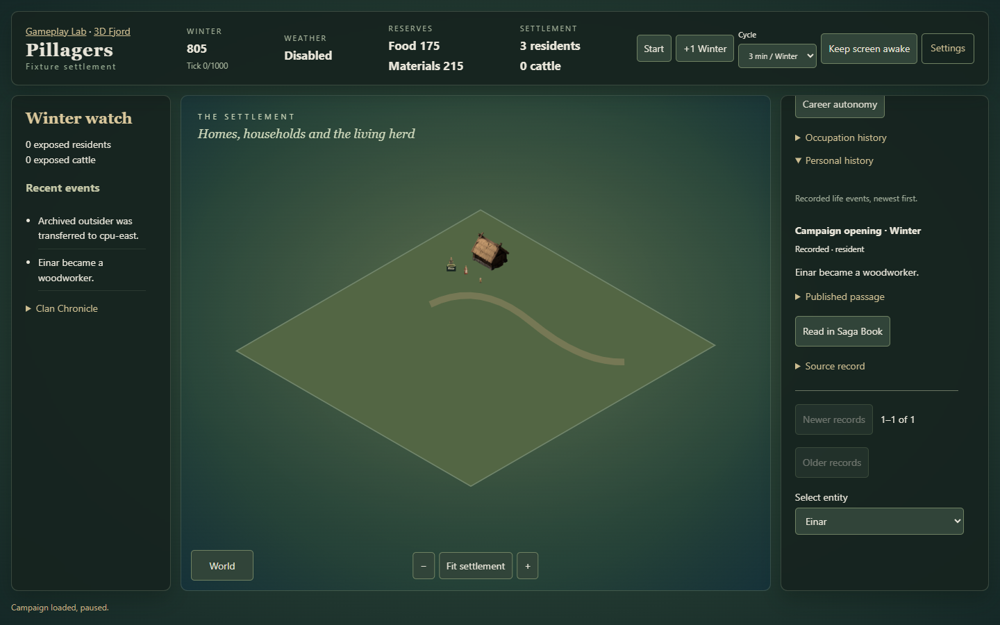
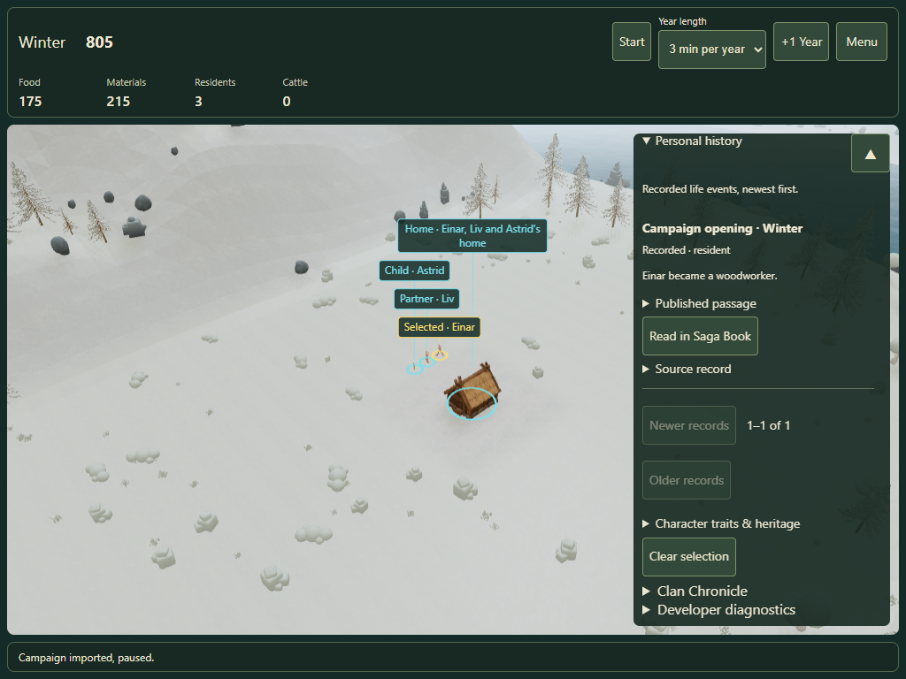
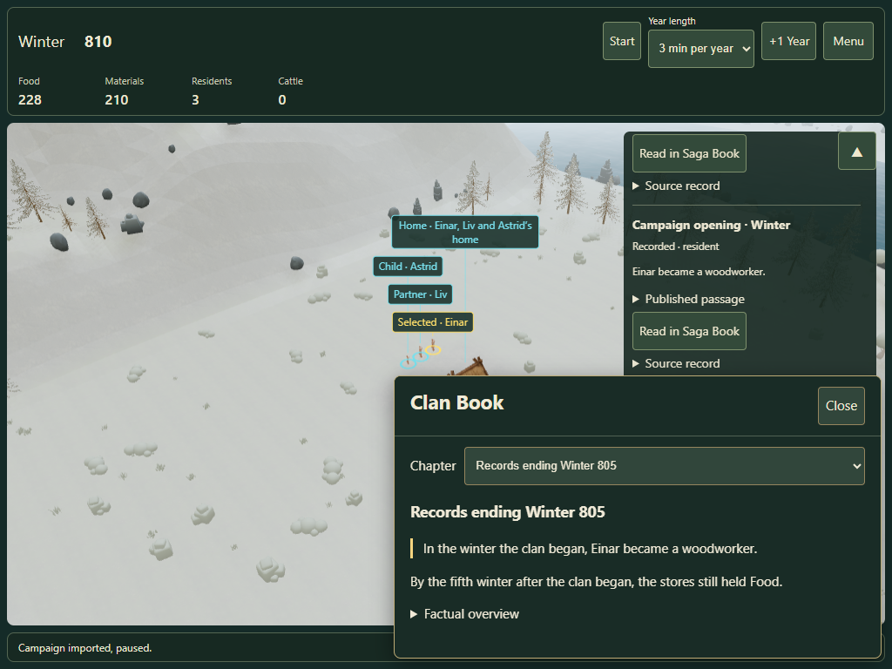
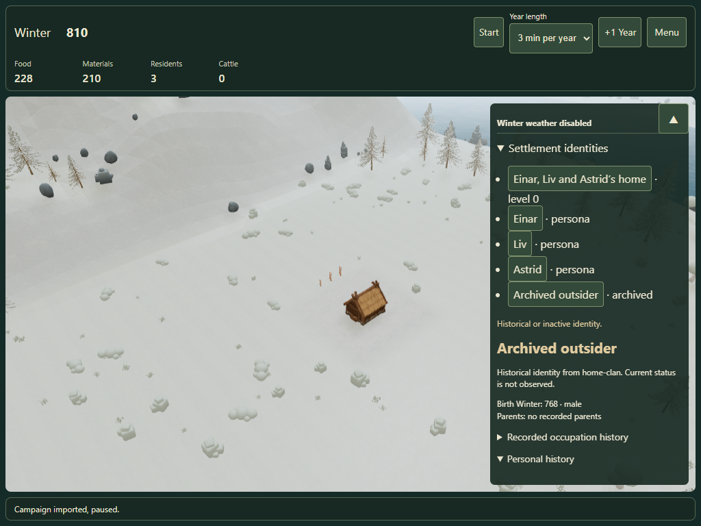

Personal history · #122
One compact disclosure shared by the 2D board and Fjord. Canonical events establish involvement; saved passages retain their exact published wording.
QA report · Executed browser checks · 2D Settlement · Fjord settlement
Before
The resident panel ended at occupation history. A resident had no entry point to their own dated Lore records. Baseline source.
After: one resident, original facts

2D board: original occupation event with source and saved chapter link.
Tablet emulation: the same disclosure in the Fjord management panel.Saved passages and historical identities

The originating saved passage receives focus and a highlighted border.
Archived residents retain their recorded involvement without a Family Tree prerequisite.Desktop and tablet touch emulation passed. Physical iPad Safari has not been certified by these runs. Older campaigns with missing attribution are not reconstructed.